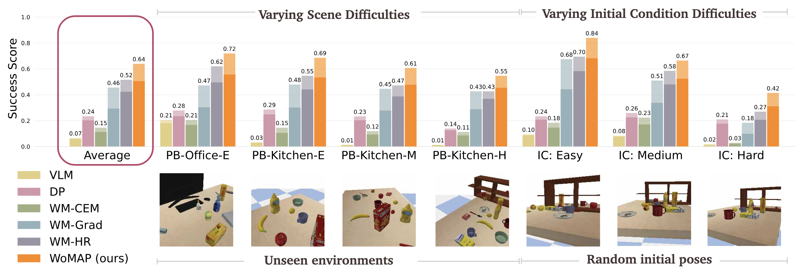
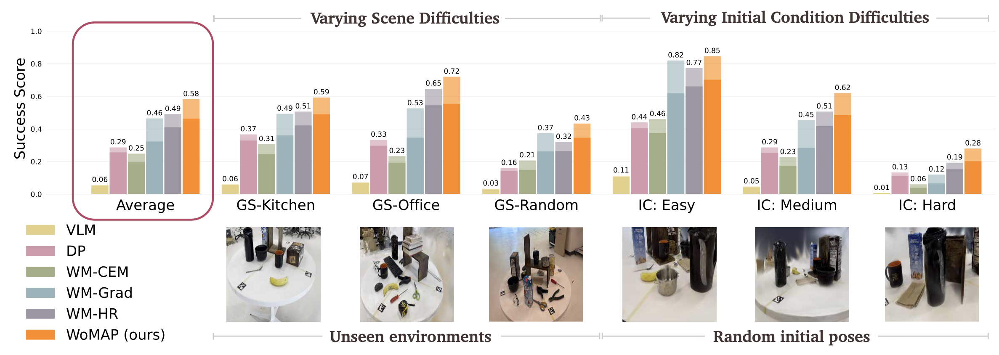

Experiments
We benchmark WoMAP against a VLM-based planner (VLM), diffusion policy (DP), and three world-model-only
planners: WM-CEM,
WM-Grad, and WM-HR, in seven challenging PyBullet (PB) and Gaussian Splatting (GS) environments, where
the robot must
efficeintly locate the query object from an arbitrary initial view in an unseen scene configuration.
In all tasks, WoMAP attains higher success rates and efficiency scores compared to all other methods.
Even when only trained on Gaussian Splat simulation, WoMAP achieves strong
sim-to-real transfer compared to baseline (see the paper for more details).
PyBullet Simulation Experiments

*Success rates and efficiency scores are represented by transparent and solid bars, respectively.
Results are presented in the order of increasing difficulty and initial-pose
conditions: easy (E), medium (M), and hard (H).
Gaussian Splat Simulation Experiments

Zero-Shot Sim-to-Real Transfer
We evaluate WoMAP's sim-to-real transfer ability on 20 hardware trials for each of the 3
corresponding real-world tasks on the TidyBot. Despite trained entirely in Gaussan Splat simulation,
WoMAP transfers effectively to the real world, maintaining nearly the same success rate and
efficiency scores in simulation, with a worst-case performance drop of 23%.